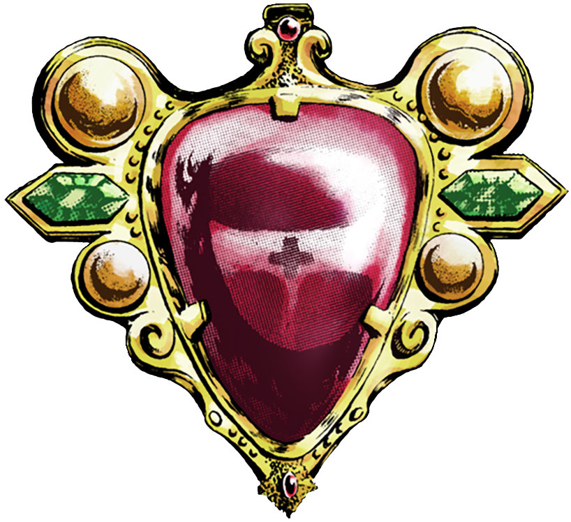

Curiosidades de JoJo's Bizarre Adventure

Ao longo de mais de três décadas de publicação, JoJo's Bizarre Adventure acumulou inúmeras curiosidades envolvendo sua criação, referências culturais e impacto na cultura pop. Confira algumas das mais interessantes.
As referências musicais
Grande parte dos personagens, Stands e habilidades da série possuem nomes inspirados em bandas, músicos e canções famosas. Exemplos incluem Dio, Killer Queen, King Crimson, Aerosmith, Red Hot Chili Pepper e muitos outros.
O nome "JoJo"
Todos os protagonistas possuem nomes que podem ser abreviados para "JoJo". Jonathan Joestar, Joseph Joestar, Jotaro Kujo, Josuke Higashikata, Giorno Giovanna e Jolyne Cujoh são alguns exemplos.
Araki e a moda
Hirohiko Araki é apaixonado pelo mundo da moda. Muitas poses dos personagens foram inspiradas em revistas e desfiles, o que explica o visual único da franquia.
JoJo no Louvre
Em 2009, Araki colaborou com o Museu do Louvre, na França, produzindo a obra "Rohan au Louvre". Poucos mangakás tiveram uma oportunidade semelhante.
O mistério da juventude de Araki
Entre os fãs existe a brincadeira de que Hirohiko Araki é um vampiro, pois sua aparência mudou muito pouco ao longo das décadas.
Os memes de JoJo
A franquia se tornou uma das maiores fontes de memes da internet, com frases como "It was me, Dio!", "Yare Yare Daze" e "Kono Dio Da!" sendo conhecidas até por quem nunca assistiu ao anime.
A inspiração para os Stands
Araki afirmou que a ideia dos Stands surgiu do desejo de representar visualmente poderes sobrenaturais, criando entidades que refletem a personalidade de seus usuários.